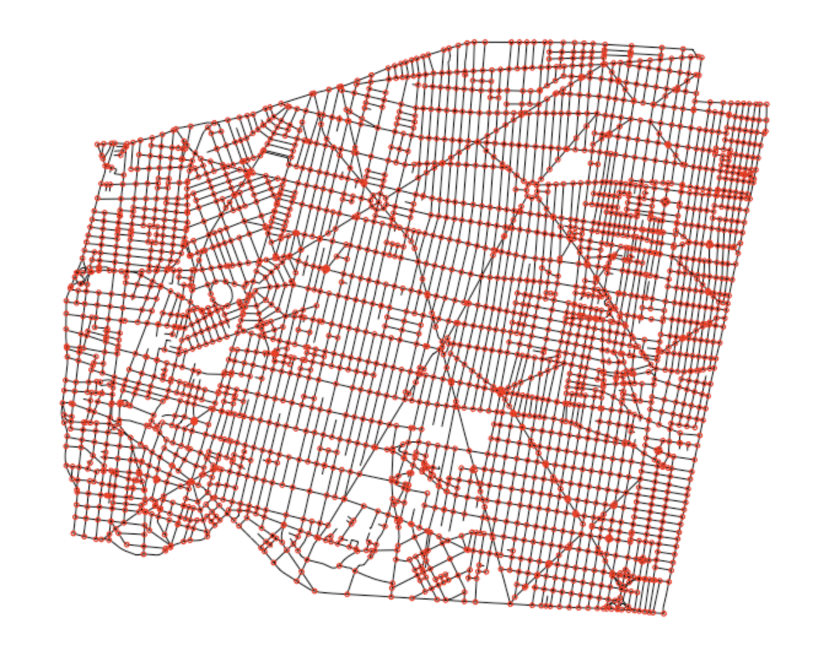
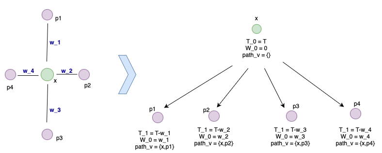
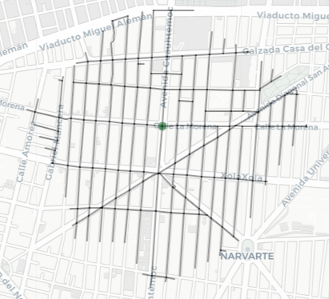
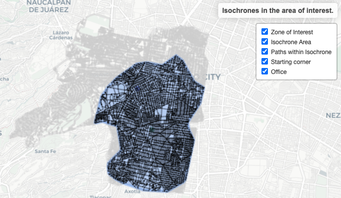

Isochrones calculator
Isochrones
In geospatial analysis, one of the most important issues is identifying objects of interest that are within range of a given point. Think of all the cell phones that can be reached by an antenna, all the medical centers around a point in the city, and all the competitors near a store. For most of these problems, the most immediate solution is to define the range from a point in terms of distance. It is usually assumed to be Euclidean, but care must be taken because in geospatial analysis we work with projections.
Even ignoring the caveats regarding distances and projections, the problem lies in the fact that the space being analyzed is not uniform: nature presents geographical features, societies carry out infrastructure projects that modify the distribution of spaces, and cities and living spaces are irregular.
In addition, when we carry out reach exercises, time is a constraint. It is not the same to say that there are five health centers within a five-kilometer radius as it is to say that they can be reached in less than T minutes. Thus, we can define the isochrone as follows:
Def. An isochrone \(I(x,t,Tt,Ht) \in \mathbb{R}^2\) is the area or envelope of the set of routes that can be reached from point \(x\) in less than \(t\) minutes (or any unit of time measurement) for a type of transport \(Tt\) within a defined time frame \(Ht\).
Although, in general, due to computational cost or lack of information, fixed conditions \(T_t\) and \(H_t\) are assumed, assumptions must always be specified.
Below is an example of a range radius for a 15-minute drive isochrone in Mexico City (average, OSM API, very optimistic arrivals!).

This irregularity is what makes it necessary to take isochrones into account when studying range from a fixed point.
There are many complexities involved in dealing with isochrones, some of which are:
- Heavy dependence on transportation vehicles.
- The time of day when the journey is made.
- Infrastructure and sensitivity to events (accidents).
- Route adaptability and travel efficiency.However, their wide range of applications and importance in industry and research make it worthwhile to find algorithms and processes to estimate isochrones more accurately.
The Algorithm
In practice, depending on the conditions and requirements of the problem (e.g., calculation accuracy, uniqueness, batch evaluation of isochrones, or multiple queries in short periods of time), a trade-off can be made between calculation accuracy and algorithm complexity. In this case, the aim is to generate intuition with a didactic approach to the problem of calculating isochrones. In subsequent exercises, other more efficient algorithms are reviewed, such as bounded Dijkstra or variants of A*.
The algorithm used is based on a DFS (Search First Depth), i.e., starting from the corner of origin, the algorithm iteratively explores all possible trajectories from that point. Since the goal is to find all possible routes in a given time, we move forward even if we cannot complete the route to the other corner. As long as there is time to travel the routes from a node, we move forward, even if it is not possible to complete them to the other corner.
Once all possible routes have been found, the geometric objects representing each trajectory are reconstructed and joined together in the same polygon. Next, a convex polygon operation is performed to obtain the coverage area with these routes and, finally, all possible routes within the coverage area are “restored” as possible routes, returning the SF objects in geodetic coordinates (lat, lon).
Below is a more comprehensive step-by-step guide on how the isochrone calculator was developed.
From Streets to Corners
From streets to corners. As a starting point, we take an SHP file containing the lines of streets or roads that are considered accessible by our means of transport (in this case, pedestrian crossings). From this file, the corners are obtained in order to generate a network whose nodes (corners) are the points towards which we move and in which the edges are the connection of corners through the streets. In this case, the weight between edges is the time in seconds required to move from one vertex to another if they are connected.

Initialization. Since we have a fixed starting point, \(x\), calculating all routes is inefficient, as the starting restriction allows us to start from there iteratively. We identify, without loss of generality, one of the corners as the starting point.
From here, we identify the points adjacent to the starting point along with their corresponding time cost, based on the weight of the streets determined by their length and the average speed of movement assigned to the algorithm.

Starting from the initial point, the st_buffer function is used to determine a circle with a radius of 5 m which, by intersecting with the street structure, identifies which streets are adjacent to the point itself. This operation is repeated with the segments to determine which corners and vertices are adjacent.

Here we have the first sub-paths.
Comprehensive search
If we isolate this subprocess and view it as a particular step, once we identify the point of interest (previously, the starting point) and its corresponding adjacencies, we can begin to construct a series of paths within our reach. In the following diagram, we can see how the subnetwork can then be considered as a tree from which we can explore the different options, updating the time budget and the list of nodes traversed so far with each decision.

If we exclude corners and streets already traveled (we do not want cycles in our paths), we can repeat this step iteratively as long as we have time available, thus adding consecutive nodes and generating a series of paths whose origin node is the starting point.
If the next adjacent node to be explored requires traveling along a street that takes longer than the available time, we decide to advance fractionally along the node until the available time runs out, thus creating a new node and “synthetic” edges, and the exploration is completed.
In this way, the loop is completed with a series of paths. Below is an example of the paths generated from the starting point:

Finally, for the vast majority of applications, the aim is to obtain coverage. Therefore, based on these paths, a concave envelope polygon with smoothing is generated to cover the paths and generate the polygon considered to be the desired isochrone.

Simulation assumptions
In addition to assumptions about people’s walking speed, in order to perform a more realistic simulation, the algorithm includes waiting and “traffic” parameters. In other words, let’s look at the following diagram:

We assume that if a path is passable on foot, it is also passable by bicycle.
We also assume that streets are two-way for pedestrians and bicycles.
As we can see, even when walking, especially in an urban area, we are forced to wait for the traffic light to change. Even on pedestrian-only streets, the presence of other people forces us to take these waiting times into account. On the one hand, there is the probability of encountering a red light, and on the other, the waiting time in seconds until it changes. This generates more realistic data. We have included this logic in each of the nodes (corners).
Experiments
Question: How far from my house can I get by bike?
Imagine you are a young office worker living in the south-central part of Mexico City. Every day you drive to and from work during rush hour. Mobility apps are very expensive, and you see many people riding bikes while you wait for the traffic light to turn green.
Before going online and buying a bike, you need to solve the following problem: you want to write code to simulate the distance you can actually travel. You will only change your mode of transportation if important places are within a 30-minute radius of your home; otherwise, you will continue to drive.
Therefore, the problem you want to solve is the following: how long does it take to travel 30 minutes by bike from my starting point (my home)?
Problem statement:
Given a shapefile of streets and a starting point, build an algorithm that calculates the isochrone in walking or biking distance for a given time and average speed.
Data preparation
The following approach was used to prepare the data: using INEGI’s 2020 Geostatistical Framework, the Mexico City street file was filtered by the corresponding municipality. Based on this filter, a self-intersection was applied to obtain the corners corresponding to the municipality’s roads.
### Data ---------------------------------------------------------------------
# Lines and streets from the point of interest
shp_streets <- st_read(paste0(RAW_DATA, SHP_DIRECTORY,SHP_FILE_C)) |>
filter(CVE_MUN == '014') |>
st_transform(crs = CRS_MX)
# We get the corners from LINESTRING
corners_sf <- st_intersection(shp_streets) |>
filter(st_geometry_type(geometry) == "POINT") |>
select(origins, geometry)
corners_sf <- corners_sf[!duplicated(st_as_binary(corners_sf$geometry)), ] |>
mutate(id_node = row_number())We define our starting point in Mexico City as the following address: Dirección.
A time budget of 30 minutes will be set, and the average cycling speed will be assumed to be 4 meters per second.
### Execution -----------------------------------------------------------------
# Starting Point
# https://maps.app.goo.gl/CnuKBE7yScWgANmp8
lat <- 19.39798481495679
lon <- -99.1615400498479
# Maximum duration of trajectories in seconds
T_segs <- 30*60
VEL_MPS <- 4 # Average velocity in metter per second
TWT_IND <- TRUE # Indicator if there are waiting times
TRAFFIC_WT <- 120 # Witing time in seconds
TWT_PROB <- 0.1 # Probability of waiting, wait for green lights
POINT_TOLERANCE_M <- 150 # tolerance to find corner from point (mts)
ADJ_TOLERANCE_M <- 3 # node-edge adjacency tolerance (mts)
ADJE_TOLERANCE_M <- 3 # tolerance for edge-vertex adjacency (mts)
DISPLAY <- TRUE # Display map
ECHO <- FALSE # Print simulation status Execution
Given the past parameters, we execute the simulation. Getting the following results:
isoc <- calculate_isochrone(lat,lon,T_segs,shp_streets,corners_sf
, VEL_MPS
, TWT_IND, TRAFFIC_WT,TWT_PROB
, POINT_TOLERANCE_M, ADJ_TOLERANCE_M, ADJE_TOLERANCE_M
, DISPLAY
, ECHO
, CRS_MX)
print(isoc$mapa)
st_write(isoc$paths_isochrone,paste0("./data/sample/", "/iso_paths.geojson")
,layer = "iso_paths.geojson" )
st_write(isoc$hull_isochrone,paste0("./data/sample/", "/iso_hull.geojson")
,layer = "iso_hull.geojson" )
In the map above, we can see in light gray the streets of interest (movement restriction) corresponding to the Miguel Hidalgo, Benito Juárez, and Coyoacán municipalities. In black are the reachable roads contained in the isochrone, and in blue is the isochrone itself. The starting point is in green, and the goal is to reach the blue point (office).

As we can see in the previous image, the blue point is within our isochrone, allowing us to conclude that we can indeed complete our journey in at least 30 minutes under the mobility assumptions that were made.